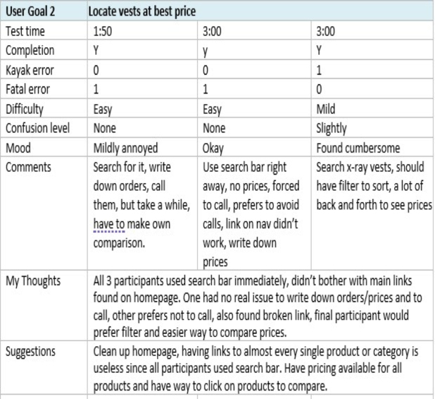
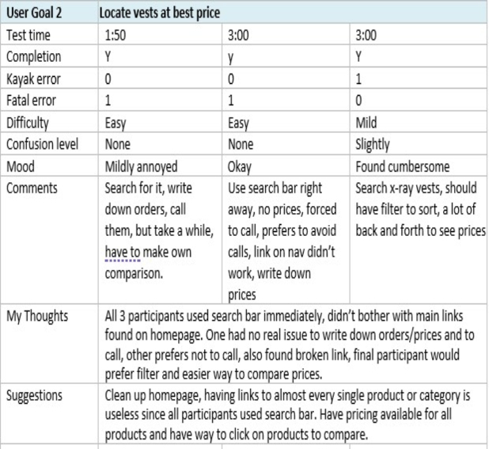

Website Redesign
Plenty of websites need a refresh, while others need more than that. Many have usability issues as well as other problems. I took a course in prototyping, which emphasized sketching techniques to develop digital wireframes and mockups, allowing me to create an interactive prototype of a business-oriented website with a focus on user experience and interface design.
Usability Testing
The final project was to find a website with usability issues that needed a complete makeover. The task was to sketch out a redesigned site, build a wireframe, and then create interactive prototypes to ensure optimal usability. I found pnwx, a business based in Oregon that is all about x-ray equipment. There are numerous usability issues, with the main ones being contrast and navigation.
I began with remote usability testing with three participants. I first asked each participant what their thoughts were of the website, such as what the purpose is and who the target user might be. They all gave me similar answers.
The next step was to accomplish two scenarios. The first was to locate the contact form, and the second was to find vests at the best price. I took notes on how long it took them to complete each task, their mood during the process, any confusion or difficulties, and what comments they might have.
I followed up with their thoughts on the design and layout of the site, finishing up with if they would recommend the website.
 

Persona & Journey Map
I created a persona to represent a realistic target user. I wanted them to be someone who would be in the market for x-ray equipment. This fictitious character would help me recreate and design the website to cater to the target audience.
The journey map took my persona and gave me a visual representation of the customer experience. I could see the difficulties encountered while looking for the contact form. It shows the difference between customer expectations and the experience they actually received.
Sketches
The next step was to create sketches of a redesigned website. I selected the homepage, a products page, and I created a contact page. Each page would have a desktop, tablet, and mobile version. The desktop and tablet look similar, with the mobile version being different. I created a hamburger icon for the navigation and then had one column for the entire page.
Since the original website did not have a hero section, I added an image to be the main focus of the home page. Underneath would be a short description of the company, followed by smaller images showcasing what they offer. The navigation and member login areas would be at the top of the page.
The contact page would have input fields, along with a message entry. The bottom of the page would have an info section with the address, a map, and business information.

Wireframes
There are numerous programs to create wireframes. I used Balsamiq to take my sketches and make them more refined. I changed the home page to have the image on the right side of the page with the business description on the left. I kept everything else the same.
Wireframes are usually black and white and shouldn't have any font choices or images, but I decided to add a little color and a few pictures to get a feel for how the site is coming along..
Prototypes
I have experience using numerous prototyping tools, such as Figma and Adobe XD. For this project, we used Axure RP. I fell in love with creating interactive prototypes. I fell into a deep rabbit hole and enjoyed every minute of it.
I first recreated each page to match the wireframes I created. I made a few subtle changes, but then I got into the interactivity and linked every page link with each other while also creating buttons, search buttons, and even a log-in confirmation section.
One of the main reasons I redesigned this website was to introduce a contact page. I made all input fields interactive, with errors and a pop-up confirmation when submitted. It showed me how the final website would look and gave me an excellent starting point to begin coding.
Usability Test pt. 2
The last part of my project was to reinterview the three participants and have them perform the same scenario; to locate the contact form. I also asked them their thoughts on the newly designed site.
The feedback I received was unanimous, it looked much better. The contrast on the site was easy on the eyes, there was navigation to make it easier to find what the user was looking for, and of course, there was a contact form.
The Finished Product
Here is the final project presentation I made for my class. I used PowerPoint to describe in detail the steps I took to redesign the PNWX website. It was a great learning experience presenting and gaining valuable feedback.
Quick Links to Other Projects

Dionysus Greek Tavern